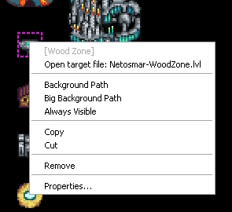
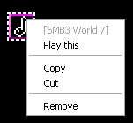
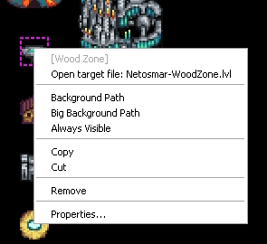
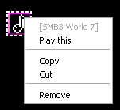

Each item have it's context menu. For righthander's mouse it can be opened by right mouse button (for lefthanders - by left mouse-button).
By context menu you can change the basic settings of one item or of all selected items. You can play music which defined by musicbox.For Level entrance point possible for fast open target level file.
 



Apply to item group by same type
Copy - Copy selected items into internal clipboard [Not support for warp points]
Cut - Copy selected items into internal clipboard and remove them [Not support for warp points]
Remove - Selected items will be removed
Properties - will open the item properties dialog for selected item group.
Open target file - you will open the target level file in the new tab.
Background path - under level point image will be displayed path image
Big Background path - under level point image will be displayed same path image, but with larger size
Always visible - with this option the level point will be displayed always. If this flag disabled, level point will be shown only when player open path to them.
Play this - will start playing of this music point
Copyright © 2014-2015 Platformer Game Engine by Wohlstand project. All rights reserved.